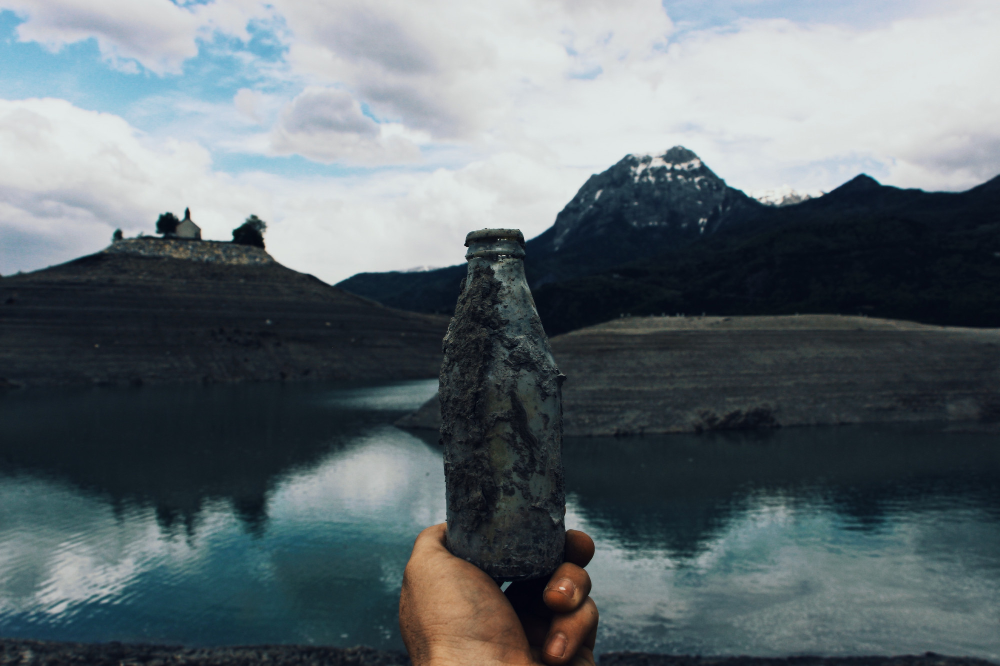
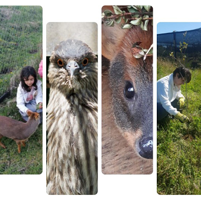

Salvémos el mundo!!!
Se estima que cada chileno genera 1,1 kilo de residuos al día. Es decir, unos 400 kilos al año por persona, nuestro país genera cerca de 7 millones de toneladas de residuos desde nuestras casas. La principal parte de ellos termina en un relleno sanitario, mientras que menos del 10% se recuperan o reciclan, una cifra que según la última Evaluación de Desempeño Ambiental de la OCDE para nuestro país es aun más baja y alcanza apenas a un 4%, la segunda tasa de reciclaje más baja de los 36 países miembros de esta organización, solo superados por Turquía.
Nuestra Visión
Convertirnos en una empresa sustentable y duradera, que sea reconocida por su alto compromiso por el cuidado del medio ambiente, así como por la atención y servicio oportuno al cliente con la oferta de productos ecológicos de calidad y con enfoque terapéutico para el usuario, todo esto con innovaciones ecológicas que han surgido desde el reciclaje, potenciado por la pandemia que ha azotado al mundo, demostrándonos que si no actuamos hoy las consecuencias a largo plazo serán irreparables. ACTIVATE JUNTO A NOSOTROS.
Causas Solidarias

CHILOÉ-SILVESTRE es una organización comunitaria que se dedica a la educación ambiental, a la rehabilitación de fauna silvestre y a la investigación. Gran parte de su trabajo la realizan con voluntarios que llegan de todo Chile y el mundo a vivir y convivir con los amigos de Chiloe-silvestre en un ambiente grato y rodeado de naturaleza, pues estan ubicados en la Reserva marina Pullinque, en Ancud. Es por esto que tocaron la fibra de HerboCristal y por cada producto que compres donaremos el 10% a esta causa!!
Horticultura
Es el proceso en el cual las personas pueden desarrollar un bienestar físico, mental y espiritual a través del cultivo de plantas y el contacto con un medio natural. Tanto la apreciación pasiva de la naturaleza como una participación activa en el jardín y el cultivo de diferentes especies influye positivamente en las emociones, la salud y el comportamiento. Los seres humanos poseemos tendencias innatas que nos atraen instintivamente hacia un ambiente natural. (Biofilia, Wilson, 1984) en el cual encontrar la tranquilidad, la paz y la espiritualidad necesarias para subsistir con plenitud y salud mental